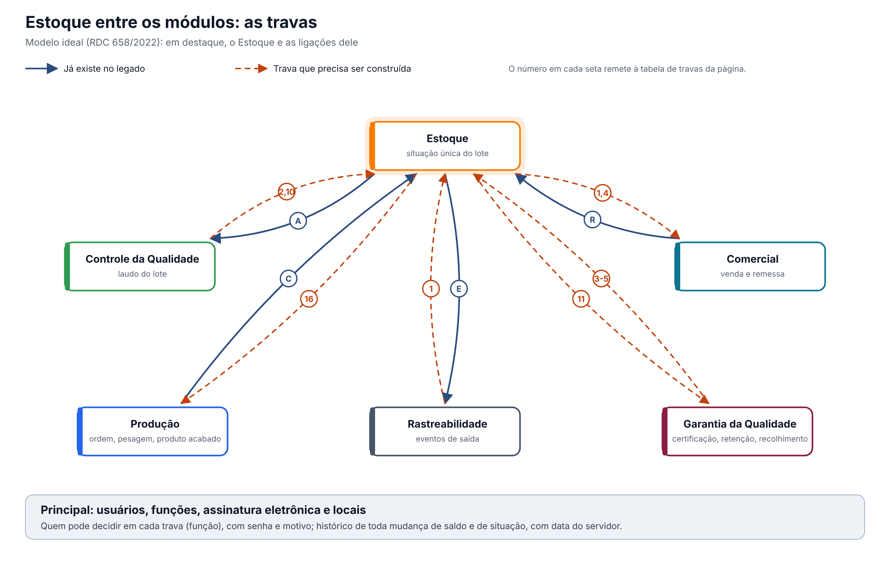

O ideal entre os módulos. O Estoque é o dono da situação única do lote: guarda, protege e aplica a decisão de quem a toma. Quem decide é o CQ (laudo), a Pessoa Delegada (liberação), a GQ (retenção e recolhimento) ou o sistema (validade). Versão 0.1, de 13/10/2026, para validação com o Estoque, o CQ e a Garantia da Qualidade.
Esta página mostra só as travas que envolvem o Estoque. O documento completo, com a situação única do lote e as 16 regras para todos os módulos, é "Qualidade entre os módulos: situação do lote e travas" (modelo-ideal/01-qualidade-entre-modulos.md), na Visão entre módulos. O módulo por dentro está em "O Estoque ideal" (est-ideal.md).
1. O desenho

Em destaque, o Estoque. As linhas cheias já existem no legado:
- A: o Estoque pede a análise de cada lote ao CQ. Funciona pelas entradas de material e falha pelo Endereçamento (DV-EST-016);
- C: a Produção envia o produto acabado ao Estoque;
- R: o Comercial reserva e gera a remessa no Estoque;
- E: o Estoque envia eventos de entrega e recebimento à Rastreabilidade, sem ler a resposta.
As tracejadas precisam ser construídas. Quase todas chegam ao Estoque, porque é ele que aplica a situação do lote.
2. As travas que envolvem o Estoque
| # | Trava | Referência | O que o Estoque faz | Com quem | No legado hoje |
|---|---|---|---|---|---|
| 1 | Situação única do lote, respeitada por todos | Arts. 157 e 189 | Guarda a situação única de cada lote e a aplica em toda tela: separar, movimentar, remeter, vender; confere de novo na gravação | CQ, GQ, Produção, Comercial, Rastreabilidade | Há situações separadas no saldo, mas faltam "liberado para venda", "retido" e "recolhido"; as travas estão desligadas; o Comercial confere só na lista |
| 2 | O laudo do CQ muda a situação na hora | Art. 189 | Recebe o laudo do CQ e muda a situação do lote na hora, sem alguém atualizar a análise na tela | CQ | O Estoque busca o resultado quando alguém abre a análise |
| 3 | Desvio retém o lote | Art. 8º, IX | Lote com desvio aberto passa a Retido e sai de separação, movimentação e remessa até a decisão da GQ | GQ | Nenhuma ligação com a GQ |
| 4 | Liberação para venda pela Pessoa Delegada | Art. 8º, XV | Produto acabado só vai a "liberado para venda" por decisão registrada da Pessoa Delegada; só então o Comercial e a remessa o oferecem | GQ, Comercial | Não existe: a aprovação do laudo faz as vezes, sem conferir a função |
| 5 | Só fornecedor qualificado no recebimento | Art. 8º, VI | O recebimento consulta o cadastro único de fornecedor qualificado e recusa, ou exige decisão da GQ, quando o fornecedor não é qualificado | GQ | A avaliação do Estoque não qualifica nem bloqueia (DV-EST-022); três versões, nenhuma consultada |
| 10 | Resultado fora de especificação abre investigação | Art. 245 | Resultado fora de especificação no CQ retém o lote no Estoque até a investigação terminar | CQ, GQ | Só exige uma observação no CQ |
| 11 | Reclamação e recolhimento retêm e recolhem lotes | Arts. 319 e 343 | Entrega à GQ, na hora, onde está cada lote e para onde saiu (remessa, venda, devolução); marca o lote como Recolhido | GQ, Comercial, Rastreabilidade | Não existe; a remessa guarda destinatário e lote, e o Estoque tem eventos ANVISA próprios, repetidos |
| 16 | Integrações confiáveis: a falha avisa e não deixa a operação pela metade | Guia 33, 9.3.2.3 | Estoque e CQ, Produção e Comercial confirmados pelos dois lados; a falha avisa e não deixa a operação pela metade; a Produção usa só a API do Estoque | CQ, Produção, Comercial, Rastreabilidade | Análise que não abre sem aviso; a Produção grava direto no banco do Estoque; a resposta da Rastreabilidade não é lida |
3. Regras que valem para todas as travas
Valem também aqui as regras gerais do documento completo (requisitos 12 a 16): histórico de toda alteração com motivo, registro no momento da ação com hora do servidor, assinatura eletrônica nas decisões, acesso por função conferido em toda gravação e integrações que avisam quando falham.
Particulares do Estoque:
- A situação do lote é conferida na gravação, e não só na lista: um lote que mudou de situação entre a escolha e a confirmação é recusado.
- Uma só gravação por operação: conferência, endereço e solicitação de análise são gravados juntos. Se falhar, nada fica pela metade e a tela diz que falhou.
- Uma saída nunca sai do registro: remessa, venda e devolução ficam registradas, e o cancelamento acrescenta um registro, sem apagar o original.
- O Estoque não decide a situação do lote: aplica a decisão do CQ, da Pessoa Delegada ou da GQ.
O que a ANVISA pede: textos citados
Texto literal das normas citadas em cada tema, extraído dos arquivos da pasta Documentação/ (RDC nº 658/2022 em português e Guia nº 33/2020) por homologacao/ferramentas/citar_normas_diagnostico.py. "(...)" marca trechos omitidos. No portal, clique na referência de cada tema para ver o texto.
Tema 1 · Situação única do lote, respeitada por todos
RDC 658/2022, art. 157
Art. 157. Os materiais recebidos e os produtos acabados devem ser fisicamente ou administrativamente colocados em quarentena imediatamente após o recebimento ou processamento, até que sejam liberados para uso ou distribuição.
RDC 658/2022, art. 189
Art. 189. Somente matérias-primas que tiverem sido liberadas pelo departamento de Controle de Qualidade e que estiverem dentro de sua data de reteste devem ser utilizadas.
Tema 2 · O laudo do CQ muda a situação na hora
RDC 658/2022, art. 189
Art. 189. Somente matérias-primas que tiverem sido liberadas pelo departamento de Controle de Qualidade e que estiverem dentro de sua data de reteste devem ser utilizadas.
Tema 3 · Desvio retém o lote
RDC 658/2022, art. 8º
Art. 8º Um Sistema da Qualidade Farmacêutica adequado à fabricação de medicamentos deve garantir que:
(...)
IX - os resultados do monitoramento de produtos e processos sejam levados em consideração na liberação do lote, na investigação de desvios e com o objetivo de tomar ações preventivas para evitar desvios potenciais que possam ocorrer no futuro;
(...)
Tema 4 · Liberação para venda pela Pessoa Delegada
RDC 658/2022, art. 8º
Art. 8º Um Sistema da Qualidade Farmacêutica adequado à fabricação de medicamentos deve garantir que:
(...)
XV - os medicamentos não sejam comercializados ou distribuídos antes da Pessoa Delegada pelo Sistema de Gestão da Qualidade Farmacêutica ter certificado que cada lote do produto foi produzido e controlado de acordo com os requerimentos de registro e quaisquer outras normas relevantes à produção, ao controle e à liberação de medicamentos;
(...)
Tema 5 · Só fornecedor qualificado no recebimento
RDC 658/2022, art. 8º
Art. 8º Um Sistema da Qualidade Farmacêutica adequado à fabricação de medicamentos deve garantir que:
(...)
VI - sejam tomadas providências para a fabricação, fornecimento e uso das matérias-primas e materiais de embalagem corretos, a seleção e monitoramento dos fornecedores e verificação da conformidade de cada recebimento com o fornecedor aprovado;
(...)
Tema 10 · Resultado fora de especificação abre investigação
RDC 658/2022, art. 245
Art. 245. Alguns tipos de dados, tais como resultados de testes, rendimentos, controles ambientais, devem ser registrados de maneira a permitir a avaliação de tendência.
Parágrafo único. Quaisquer dados fora da tendência ou da especificação devem ser abordados e sujeitos a investigação.
Tema 11 · Reclamação e recolhimento retêm e recolhem lotes
RDC 658/2022, art. 319
Art. 319. Deve haver um sistema e procedimentos apropriados para registrar, avaliar, investigar e revisar reclamações, incluindo possíveis desvios de qualidade; e, se necessário, para recolhimento dos medicamentos destinados a uso humano, incluindo os experimentais, de forma efetiva e imediata, da rede de distribuição.
RDC 658/2022, art. 343
Art. 343. Devem existir procedimentos escritos, que sejam regularmente revistos e atualizados, para a determinação das atividades de recolhimento e de outras ações de mitigação de riscos.
Tema 16 · Integrações confiáveis: a falha avisa e não deixa a operação pela metade
Guia nº 33/2020, item 9.3.2.3 (Requisitos Operacionais)
Dados – requisitos relacionados ao manuseio de dados, considerando-se o seu impacto na segurança do paciente, na qualidade do produto e na integridade dos dados, abrangendo os seguintes pontos: - Definição dos registros eletrônicos; - Definição dos tipos de dados, incluindo a identificação das características, formatação, parâmetros críticos, intervalo e formato de datas válidos, limites e exatidão e assim por diante; - Onde e como os dados serão gravados (ex.: bancos de dados relacionais, arquivos criptografados etc.) - Campos necessários; - Migração de dados (importação e exportação); - Entrada de dados e subsequente edição; - Backup e recuperação; - Requisitos para arquivamento; - Segurança dos dados e integridade.
Interfaces – devem ser definidas (se aplicável), abrangendo os seguintes pontos: - Interface(s) com o usuário – definidas em termos de níveis de acesso (operador, administrador, gerente do sistema) ou funções quando apropriado; - Interface(s) com outros sistemas; - Interface(s) com equipamentos, tais como sensores ou atuadores. Isto pode incluir listas de I/O (entrada e saída) para sistemas utilizados para controle de processos; - Forma de entrada e saída de dados pelos usuários (ex.: teclado, leitor de código de barras, impressoras etc.).